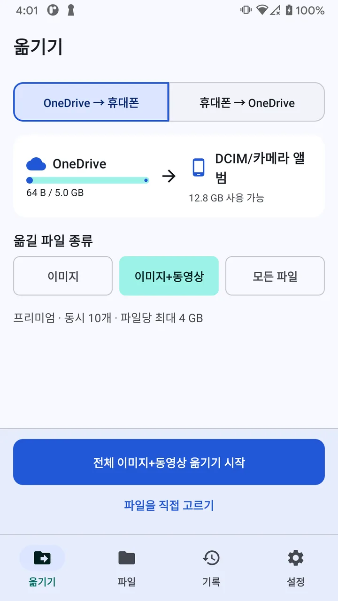
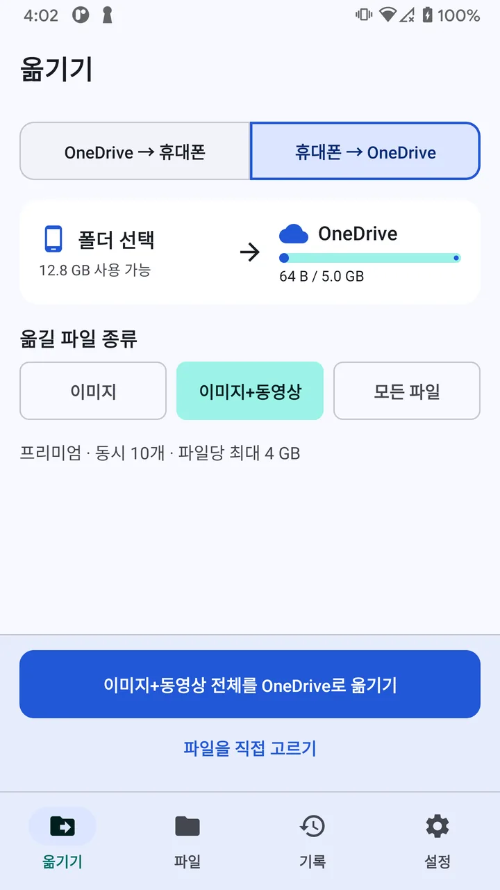
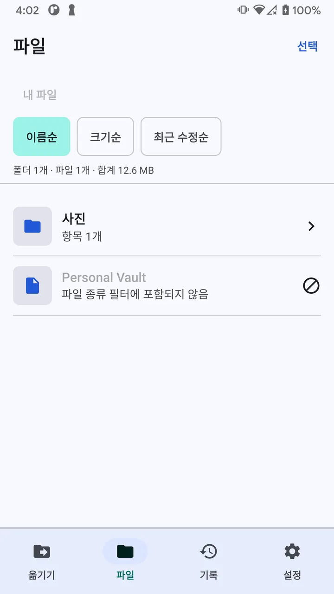
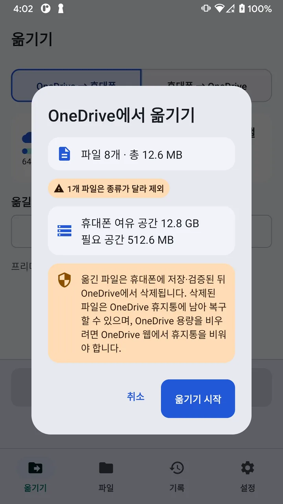
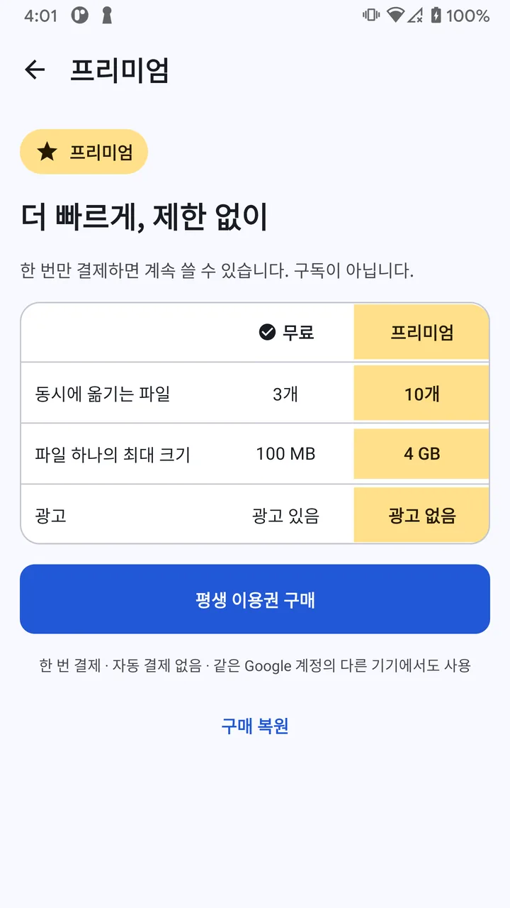
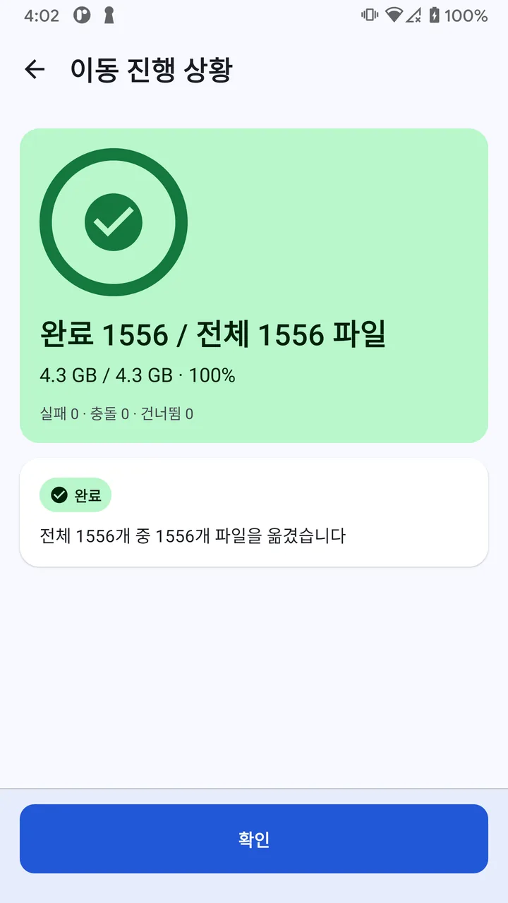

안전하게 옮깁니다
- 모든 파일은 먼저 복사하고 크기와 해시로 검증합니다. 사본이 확인된 뒤에만 원본을 삭제합니다.
- OneDrive에서 삭제된 파일은 OneDrive 휴지통으로 가므로 그곳에서 복구할 수 있습니다.
- 파일은 휴대폰과 Microsoft 사이에서 직접 전송됩니다. DriveSync 서버도, 따로 만들 계정도 없습니다.
Pixel 폰의 Google 포토 백업에 최적화
무제한 Google 포토 백업이 되는 예전 Pixel을 쓰고 계신가요? DriveSync는 OneDrive에 쌓인 사진과 동영상을 그 Pixel로 옮기고, OneDrive 용량은 비워 드립니다.

사진과 동영상은 DCIM/Camera에 바로 저장됩니다. Google 포토가 따로 설정하지 않아도 백업하는 폴더입니다. 폴더를 고를 필요도, 하위 폴더 백업을 켤 필요도 없습니다.
파일은 원본 화질 그대로, 1바이트도 바뀌지 않고 옮겨집니다. 하나하나 검증한 뒤에만 OneDrive 쪽 원본을 지웁니다.
Google 포토 백업이 끝나면 휴대폰에서 비우고 다음 묶음을 이어서 옮기면 됩니다.
무제한 백업 여부는 Pixel 모델(Pixel 5 이전)과 Google 약관에 따라 다릅니다. DriveSync는 Android 8 이상인 모든 휴대폰에서 쓸 수 있고, 폴더를 고르지 않고 DCIM/Camera에 저장하는 기능은 Android 10 이상에서 동작합니다.
클라우드 용량 확보.
휴대폰 용량 확보. 휴대폰 폴더를 고르면 파일을 올리고 검증한 뒤 휴대폰에서 지웁니다.





한 번 결제, 구독 아님
OneDrive 사진을 Pixel로 옮겨 Google 포토에 백업하세요. 검증 후에만 원본을 지웁니다.